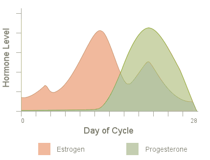

<ion-view view-title="Dashboard">
  <ion-content class="padding" overflow-scroll="false">

    <p class="padding dash-paragraph">Hormones in a woman's cycle can affect virtually every aspect of her day-to-day life, including brain skills, mood, energy, libido, cravings, spending habits, extroversion, confidence and more. The good news? It's possible to track these changes and use them to your advantage. Enter your information on the <a href="#/tab/settings">settings</a> page and follow the <a href="#/tab/calendar">calendar</a> as you proceed through your cycle.</p>
    <hr>
      
  </ion-content>
</ion-view>
